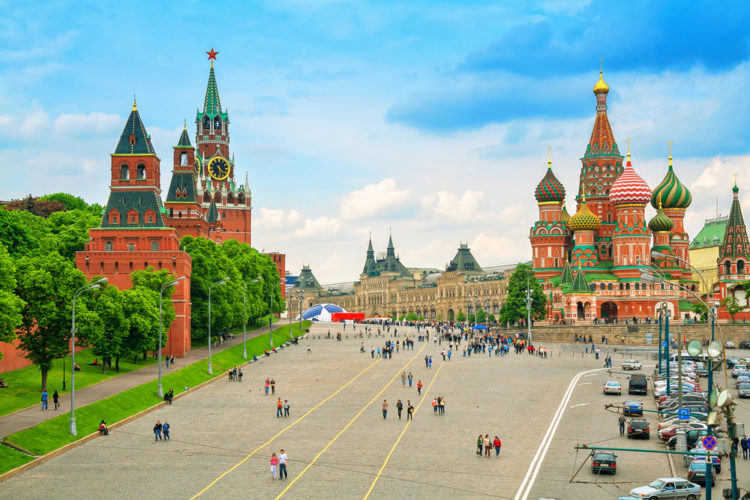

1. Красная площадь (Москва)

Красная площадь – визитная карточка Москвы. Без этой достопримечательности России невозможно представить себе и саму державу. Почему же главная площадь белокаменной получила такое название? То, что «красное» – слово, обозначающее не только цвет, но и красоту, знают даже школьники. Однако, до XV века выгоревшее дотла пространство возле кремлевских стен было далеко не привлекательным. Площадь вскоре застроили, установив напротив нее торговые ряды, количество которых постепенно увеличивалось. В будущем здесь возник самый прославленный центр торговли страны – ГУМ. Его размерами никого не удивишь, а вот архитектура здания поистине уникальна. Конечно, символом Красной площади стал Кремль со Спасской башней – главными часами России. Если встать лицом к кремлевской стене, у которой похоронены главные политики и выдающиеся личности страны, то слева Вы увидите самый красивый храм страны – Собор Василия Блаженного. Многие экскурсоводы начинают экскурсии с посещения именно этого сооружения, восхищающего своей необычностью и изяществом. Неподалеку расположился памятник Минину и Пожарскому, возведенному в честь победы 1612 года над поляками. Лобное место, также находящееся в нескольких шагах от памятника, напоминает о временах, когда площадь была и местом казни преступников.